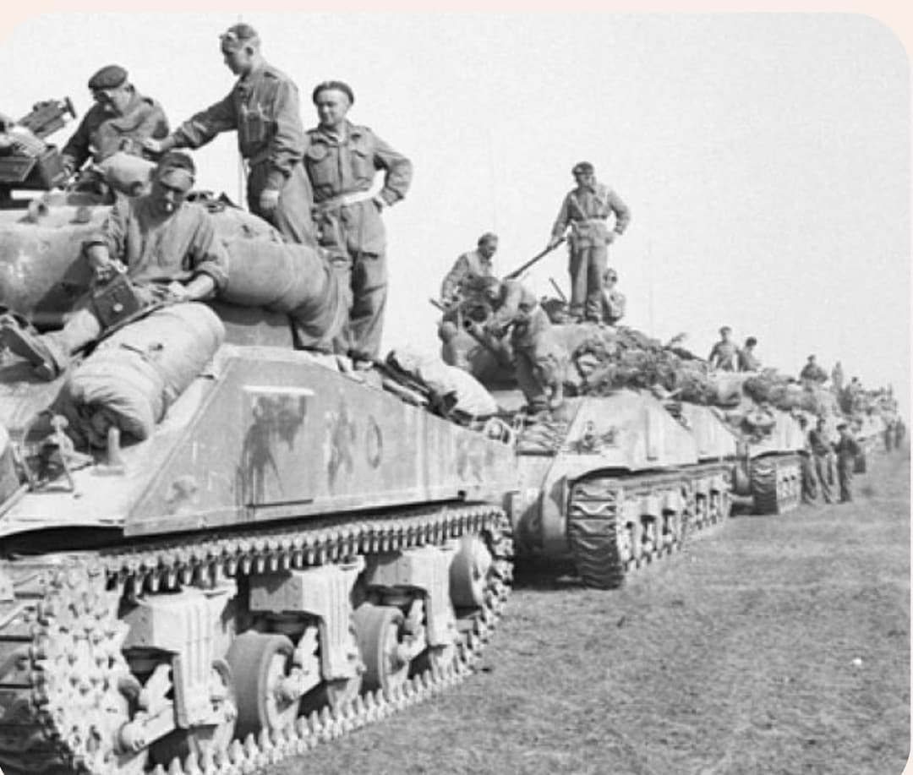
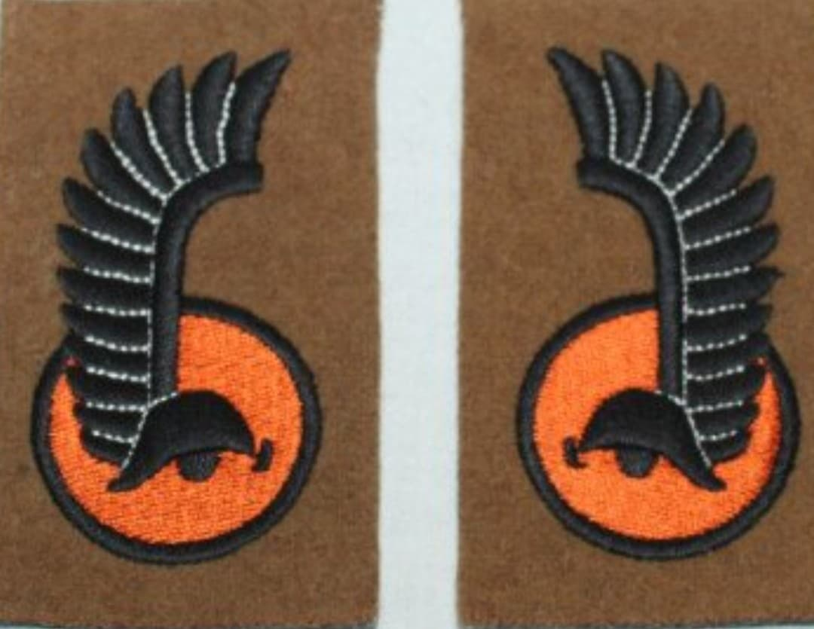
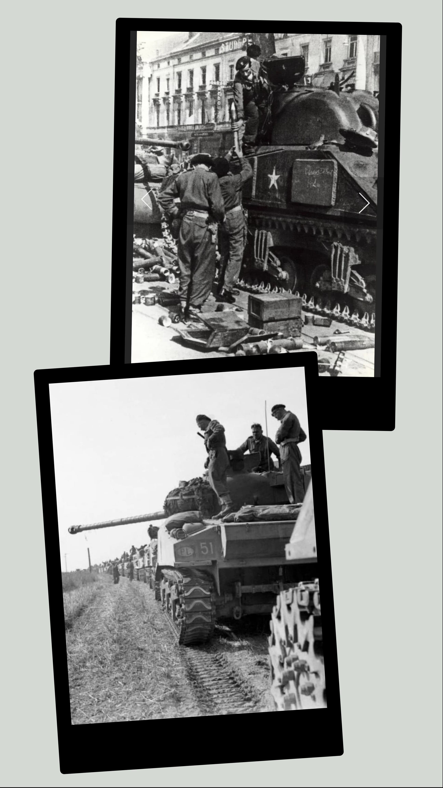

Du général Stanisław Maczek au verrou sanglant du Mont Ormel dans la poche de Falaise

Créée en Écosse en février 1942 sous le commandement du charismatique général Stanisław Maczek, la 1re Division Blindée polonaise (1. Dywizja Pancerna) réunit des milliers de soldats polonais ayant fui l'invasion de leur patrie en 1939.
Équipée et entraînée par les Britanniques sur le modèle des divisions blindées du Commonwealth, la division s'est révélée être l'une des unités les plus redoutables et tenaces du front Ouest, guidée par la devise : « Pour notre liberté et la vôtre ».
Composée de réfugiés polonais, de rescapés des campagnes de 1939 et 1940, ainsi que de volontaires de la diaspora, la division intègre le 2e Corps canadien pour la campagne du Nord-Ouest de l'Europe.
Son insigne célèbre reprend les ailes de hussard stylisées (les célèbres Hussards ailés polonais des XVIe et XVIIe siècles) encadrant le casque de chevalier noir, symbolisant l'héritage chevaleresque et la puissance aveuglante des blindés polonais.

Débarquée en Normandie début août 1944, la division participe à l'opération Totalize puis joue un rôle historique capital lors de la fermeture de la **poche de Falaise-Chambois**.
Positionnés sur les hauteurs du **Mont Ormel** (surnommé « La Massue » par le général Maczek), les tankistes et fantassins polonais subissent du 19 au 21 août 1944 des contre-attaques désespérées et sanguinaires de la 2e SS-Panzer-Division et de la 352e Infanterie-Division qui tentent de sortir du piège. Complètement encerclés et à court de munitions, les Polonais tiennent la position au prix de sacrifiants héroïques jusqu'à la jonction avec les unités américaines et canadiennes.

Après la poursuite de l'ennemi à travers la France et la Somme, la 1re DB polonaise participe activement à la libération de la Belgique (Ypres, Gand) puis des Pays-Bas. Elle s'illustre particulièrement lors de la capture de la ville stratégique de **Breda** en octobre 1944 sans faire de victimes civiles.
Au printemps 1945, elle pénètre en Allemagne du Nord et termine la guerre en capturant la grande base navale de la Kriegsmarine à **Wilhelmshaven**, recevant la capitulation de plusieurs dizaines de milliers de soldats allemands le 5 mai 1945.
Au cours de sa campagne, la division a perdu plus de **1 400 hommes** tués et plus de 4 000 blessés.
Malgré leur contribution majeure à la victoire alliée, le destin d'après-guerre des hommes de Maczek fut tragique : le nouveau gouvernement communiste polonais sous tutelle soviétique leur retira la nationalité polonaise, forçant le général Maczek et la plupart de ses hommes à l'exil en Grande-Bretagne.
Page du Musée HOP WW2 – Section Unités & Divisions Célèbres